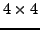

Gan_Marix mA;
/* create matrix A using e.g. gan_mat_form() */
gan_mat_set_size ( &mA, 3 );
This resets the size of the matrix mA to 3.
If the size of a matrix created
by gan_mat_alloc() or gan_mat_form() is increased in size
in this way beyond its originally allocated size, gan_mat_set_size()
will automatically reallocate the matrix to the new size.
On the other hand, if gan_mat_form_data() was used to create the
matrix, it cannot be increased in size beyond the size of the array
passed as the last argument into gan_mat_form_data().
For square matrices there are similar routines for specific matrix types, for instance
Gan_SquMarix smA;
/* create matrix A using e.g. gan_squmat_form() */
gan_symmat_set_size ( &mA, 3 ); /* set A to be a symmetric matrix with size 3 */
An important feature here is that Gandalf allows both the size and type of
the matrix to be changed. For instance, the following code is valid:
Gan_SquMarix smA;
gan_diagmat_form ( &smA, 2 ); /* create matrix A as diagonal with size 2 */
gan_symmat_set_size ( &mA, 3 ); /* set A to be a symmetric matrix with size 3 */
Gandalf will reallocate the matrix internally if necessary. The main proviso
here is that if the matrix was created using a ..._form_data() routine,
setting it to a type and size which requires more independent elements than
the size of the data array passed in is an error, so for instance
Gan_SquMarix smA;
double adAdata[10];
/* create matrix A as diagonal with size 2 */
gan_diagmat_form_data ( &smA, 2, adAdata, 10 );
/* set A to be a symmetric matrix with size 4 */
gan_symmat_set_size ( &mA, 4 );
is OK, because a  symmetric matrix has ten independent elements,
but an additional line
gan_ltmat_set_size ( &smA, 5 ); /* set A to be a lower triangular matrix with size 5 */
will fail (return NULL), because a The complete list of routines for setting a square matrix to a specific size (here 5) and type is
gan_symmat_set_size ( &smA, 5 ); /* set A to be a 5x5 symmetric matrix */
gan_ltmat_set_size ( &smA, 5 ); /* set A to be a 5x5 lower triangular matrix */
gan_utmat_set_size ( &smA, 5 ); /* set A to be a 5x5 upper triangular matrix */
gan_diagmat_set_size ( &smA, 5 ); /* set A to be a 5x5 diagonal matrix */
gan_scalImat_set_size ( &smA, 5 ); /* set A to be a 5x5 scaled identity matrix */
and there is also a function for setting a matrix with a variable type:
/* set A to be a symmetric matrix with size 5 */
gan_squmat_set_type_size ( &smA, GAN_SYMMETRIC_MATRIX, 5 );
and routines to set only the type, or only the size, of the matrix:
/* set A to be a symmetric matrix, size unchanged */
gan_squmat_set_type ( &smA, GAN_SYMMETRIC_MATRIX );
/* set A to be size 4, type unchanged */
gan_squmat_set_size ( &smA, 4 );
Error detection: NULL is returned and the error handler is invoked on failure. The most likely failure mode is failing to reallocate the matrix data, i.e. failure of a call to realloc().